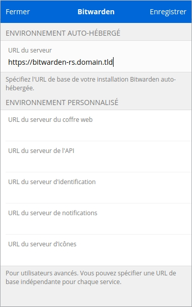
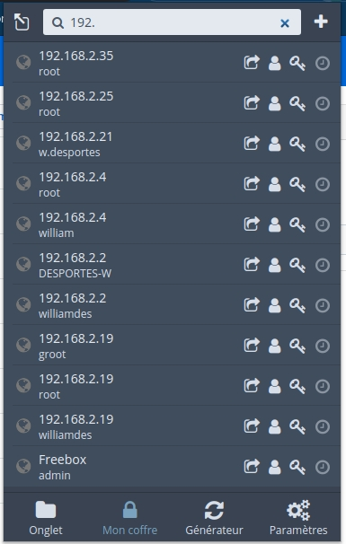
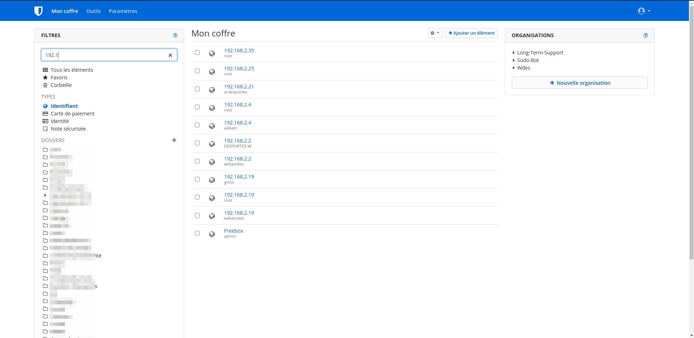

Here is a story about how I moved out from LastPass to Bitwarden after 7 years using LastPass.
The story
I was using LastPass since 7 years (or maybe more, last email found is in 2014) and I decided it was a cool adventure but some recent news did make me say goodbye for some new fresh tech. Using Bitwarden since a couple of months I am convinced it is a good tool and started searching for self hosted options. Bitwarden is open-source, not like LastPass. You can browse the code on their GitHub. I read that to self host Bitwarden it needed some gigs of ram and I was quite perplex to read that. I understood why when I found out they where using Microsoft SQL server and running C#. It seemed quite overkill but Internet is big and I found out that someone had re-implemented all that in Rust. I love Rust and that was enough for me to decide to have a try. After some minutes configuring my haproxy I got my deployed container working and could start my migration. Wait, you are asking If I had deployment issues ? hahaha, no. I used the docker image with docker compose and it just works.
You can configure the domains allowed to register to your Bitwarden instance, very nice feature ! And more cool things, just have a look to the .env template
I had a look to a French video to install the official server using Docker, I could see a lot of "overkill" stuff and one non pleasant thing was: to have to ask for an install key to Bitwarden using a form on their website. No way I would fill this form, I have nobody to inform if I install or not the Bitwarden server.
After setting up my instance I Exported all my Bitwarden accounts and my LastPass account and imported the data. Logged in with my phone and browser extension after defining the URL of my instance and that was it.
What about you, just have a try ;)
Some details about how it works
It works great, anyway nothing surprising with a Rust back-end. It consumes less than 50MiB of RAM, I allocated 200MiB to the container just in case.
Some screenshots
(Yes they are in French, the UI is intuitive enough for non French users to understand my screenshots)
Configure the domain
Use the bolt icon on the login modal.

Your vault's view from the Chrome extension

Your vault's view from the web UI

Docker compose
bitwarden:
image: bitwardenrs/server
restart: always
dns_search: host.tld
hostname: bitwarden.host.tld
domainname: host.tld
container_name: bitwarden.host.tld
networks:
my_network:
aliases:
- bitwarden.host.tld
mem_limit: 200m
mem_reservation: 100m
volumes:
- ${BITWARDEN_VOLUME}:/data
environment:
WEBSOCKET_ENABLED: 'true'
SIGNUPS_ALLOWED: "${BITWARDEN_ENABLE_SIGNUPS}"
SIGNUPS_DOMAINS_WHITELIST: "${BITWARDEN_SIGNUPS_DOMAINS_WHITELIST}"
ADMIN_TOKEN: "${BITWARDEN_ADMIN_TOKEN}"
INVITATION_ORG_NAME: "${BITWARDEN_INVITATION_ORG_NAME}"
DOMAIN: "${BITWARDEN_URL}"
SMTP_HOST: "${BITWARDEN_SMTP_HOST}"
SMTP_FROM: "${BITWARDEN_SMTP_FROM}"
SMTP_FROM_NAME: "${BITWARDEN_SMTP_FROM_NAME}"
SMTP_PORT: "${BITWARDEN_SMTP_PORT}"
SMTP_SSL: "${BITWARDEN_SMTP_SSL}"
SMTP_EXPLICIT_TLS: "${BITWARDEN_SMTP_EXPLICIT_TLS}"
SMTP_USERNAME: "${BITWARDEN_SMTP_USERNAME}"
SMTP_PASSWORD: "${BITWARDEN_SMTP_PASSWORD}"